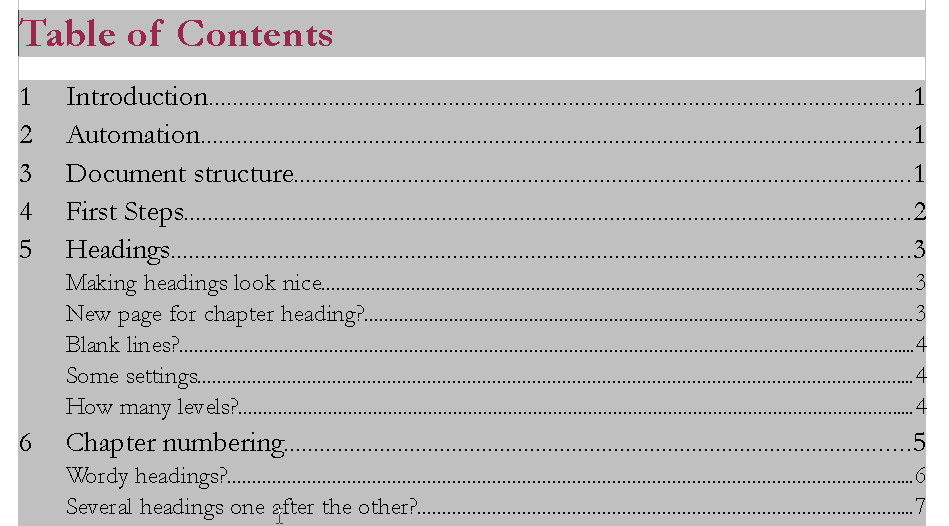
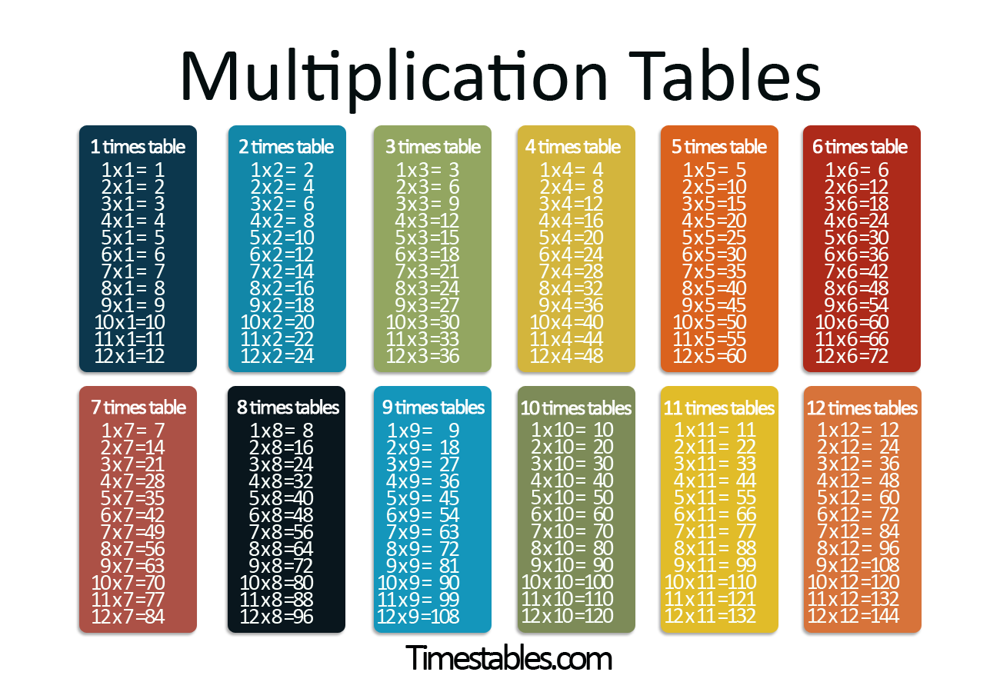
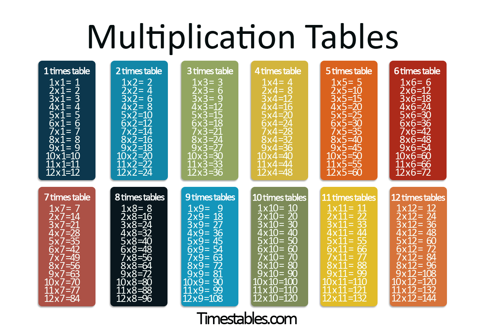

A table of contents, usually headed simply Contents and abbreviated informally as TOC, is a list, usually found on a page before the start of a written work, of its chapter or section titles or brief descriptions with their commencing page numbers.
Mathematical tables are lists of numbers showing the results of calculation with varying arguments eg, multiplication table, logic truth table etc.
 

Chemistry makes use of tables as well. The periodic table is a tabular arrangement of the chemical elements, ordered by their atomic number

Database systems often store data in structures called tables; in which columns are data fields and rows represent data records.
Modern software applications give users the ability to generate, format, and edit tables and tabular data for a wide variety of uses eg, word processing applications; excell spreadsheets, etc.